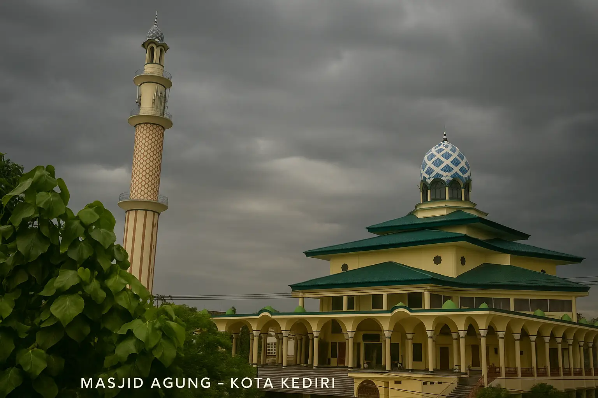

01
Kubah setinggi 49 meter
Kubah menjadi salah satu elemen yang menonjol dan mudah dikenali dari bangunan masjid.
Mengenal Masjid Agung Kota Kediri, tempat beribadah yang menyimpan sejarah panjang, keindahan arsitektur, dan semangat kebersamaan umat.

Masjid Agung Kota Kediri pertama kali didirikan pada tahun 1771. Masjid ini dikenal sebagai masjid terbesar dan termegah di Kota Kediri. Pada masa lalu, masjid ini disebut Masjid Jami' Kediri.
Seiring berjalannya waktu, bangunan masjid telah mengalami renovasi berulang kali. Namun, mimbar masjid hanya direnovasi sekali untuk menjaga keasliannya sebagai bagian dari warisan sejarah.
Karakter bangunan Masjid Agung Kota Kediri memadukan unsur arsitektur masjid dengan sentuhan khas Jawa.
Kubah menjadi salah satu elemen yang menonjol dan mudah dikenali dari bangunan masjid.
Bangunan memiliki tiga lantai dengan deretan pilar di area serambi yang memberi kesan megah.
Atap bergaya joglo mencerminkan tradisi Jawa, dilengkapi kubah berwarna hijau kebiru-biruan.
Berikut contoh fasilitas yang umumnya tersedia untuk mendukung kegiatan ibadah dan kunjungan jamaah. Ketersediaan fasilitas tertentu dapat berubah.
Area ibadah untuk jamaah melaksanakan salat berjamaah.
Area bersuci sebelum melaksanakan ibadah.
Fasilitas sanitasi untuk kebutuhan jamaah dan pengunjung.
Ruang untuk mengikuti ceramah, kajian, dan kegiatan keagamaan.
Tempat menata alas kaki agar area ibadah tetap rapi.
Area tambahan untuk berkumpul atau menunggu sebelum kegiatan.
Tempat parkir bagi jamaah, sesuai ketersediaan dan pengaturan setempat.
Tempat pendukung aktivitas sosial dan kegiatan komunitas masjid.
Masjid bukan hanya tempat salat, tetapi juga tempat belajar, berbagi ilmu, dan tumbuh bersama sebagai komunitas.
Setiap minggu pagi diadakan ceramah atau kajian yang diisi oleh ustaz yang berbeda-beda. Kegiatan ini menjadi kesempatan bagi jamaah untuk menambah wawasan keislaman dan mempererat silaturahmi.
Setiap minggu pagiRemaja masjid menjadi wadah bagi generasi muda untuk terlibat dalam kegiatan positif, belajar berorganisasi, memperkuat nilai keagamaan, serta membantu kegiatan sosial dan kemasyarakatan.
Belajar · Berkarya · MengabdiMari berkunjung untuk beribadah, mengikuti kegiatan keagamaan, atau mengenal salah satu bangunan bersejarah di Kota Kediri.